Another Dimension
An Introduction to
WebVR
Logan Allred
Gabriel Dayley
What is VR?
Virtual Reality
The computer-generated simulation of a three-dimensional image or environment that can be interacted with in a seemingly real or physical way by a person using special electronic equipment
A simulation that gives the perception of reality, and provides realistic possibilities of interaction.
The goal is for the user to feel a part of the simulated environment, and want to interact with it.
History of VR
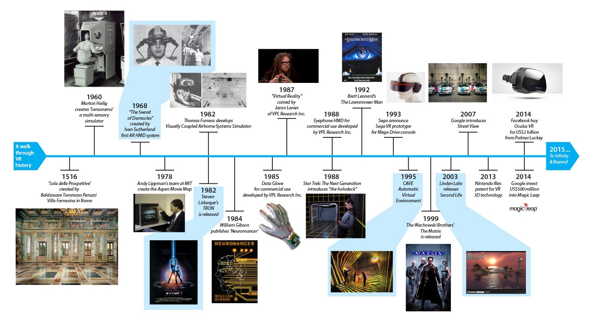19th Century
Panoramic paintings & murals
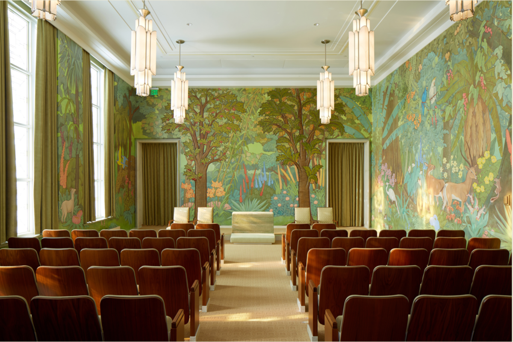
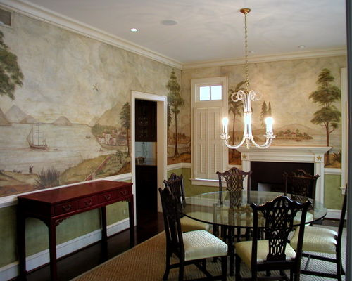
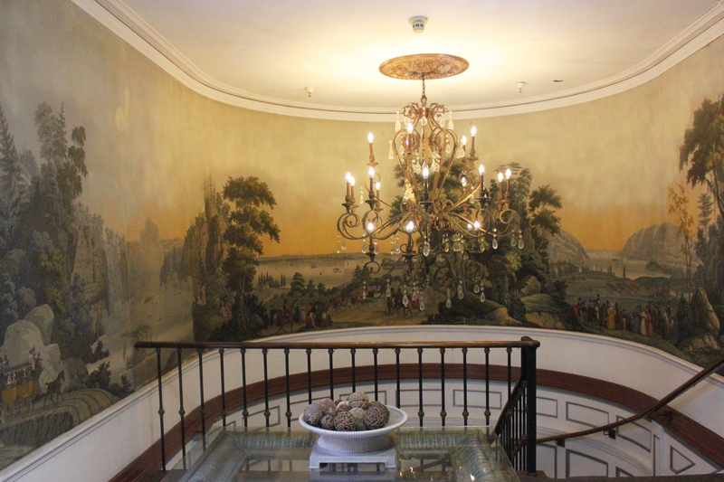
1840-1850s
Stereoscopic photography
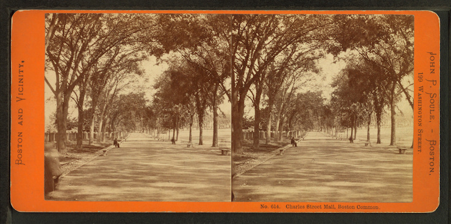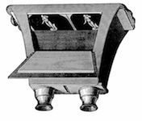
1930s
Flight simulators
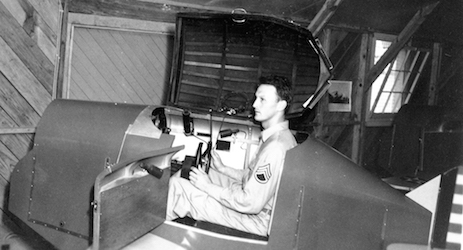
1950s
Sensorama
 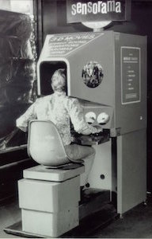
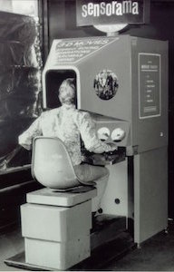
1960s
Computer simulations, first headsets
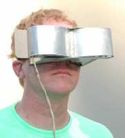 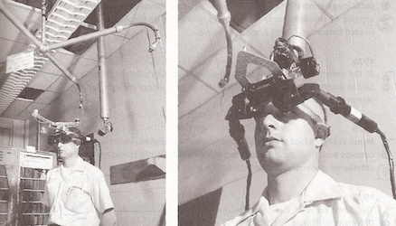1990s
Arcade and games
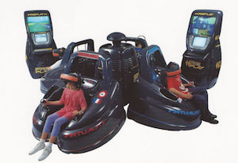 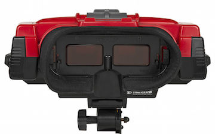2000s
Street view
Today
Why do VR?
Immersive
Learn or practice things that are expensive or dangerous
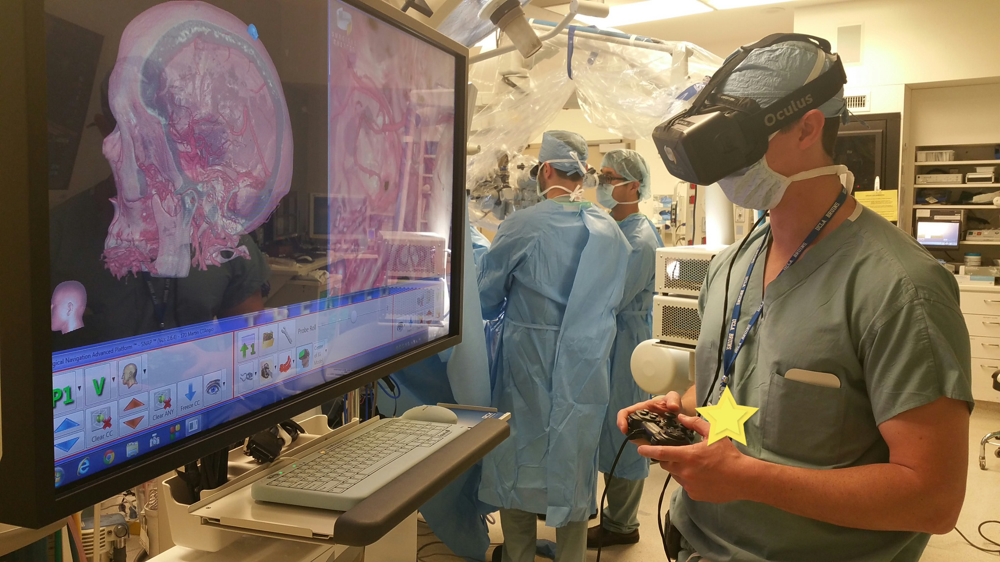
Fun & Games
Fantasy
Social
Novelty
Exploration
Empathy or emotional connection
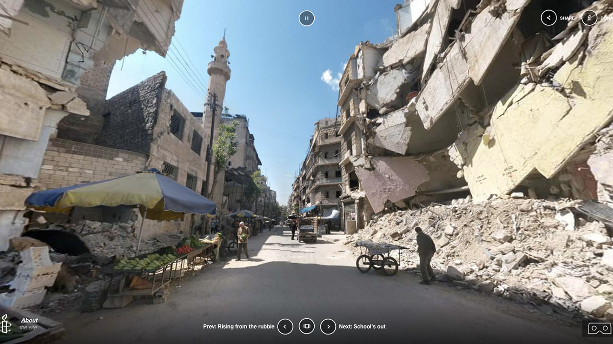 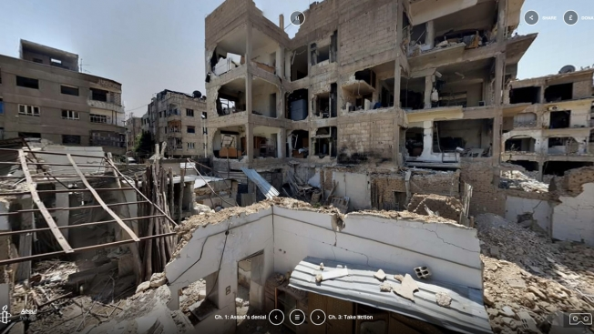 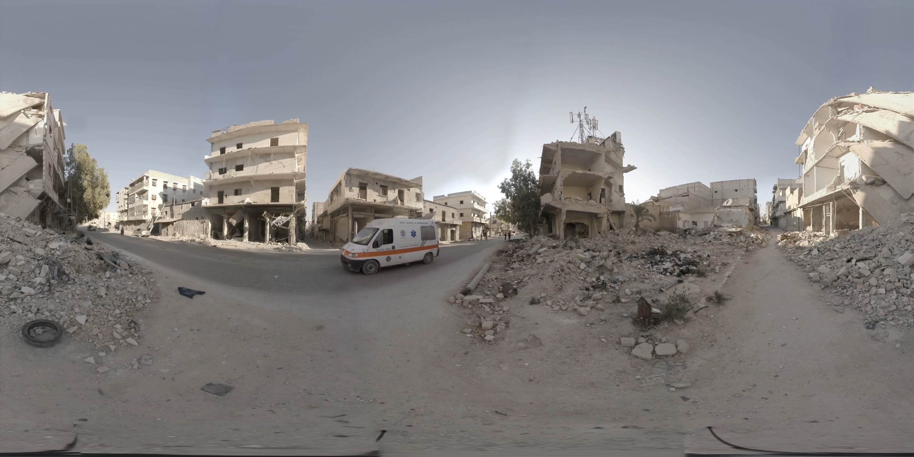VR Technology
What is WebVR?
- Browsers
- OpenGL
- Headset and feature detection
- Virtual Reality
- Polyfills for browsers without support
Progressive Enhancement
Devices


Getting started with WebVR
A-Frame
WebVR
WebVR Tree
Project repository: https://github.com/gmdayley/vr-fstree
Thanks for your time!


Project repository: https://github.com/gmdayley/vs-fstree
Demo
http://tinyurl.com/sortvr
Thanks!